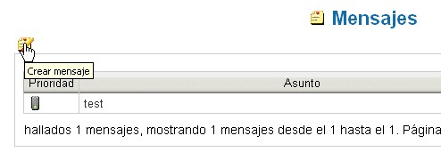

Enviar un mensaje del sistema |
El sistem provee de un pequeño sistema
interno de mensajes que consiste en utilizar una aplicación
de comunicaciones de forma veloz entre todos y sin usar e-mail.
Las comunicaciones de este tipo se realizan mediante mensajes del
sistema internos al programa y no visibles por usuarios externos.
Cada mensaje consta de, al menos, tres campo obligatorios: un
destinatario (identificado mediante el nombre del usuario), un asunto
(título del mensaje) y un texto.
Además de estos datos, es posible especificar
comportamientos adicionales como el confirmar la recepción
del mensaje, el perídodo de validez (expresado en
días)
y la prioridad del mensaje.
| El sistema interno de mensajes no intenta sustituir al tradicional e-mail, se trata sólo de un instrumento simple pensado para enviar de forma veloz, al igual que breve y concisa, mensajes referidos a la base documental. | |
Para poder enviar un mensaje, es preciso conocer el nombre exacto de usuario de contacto.
Para acceder a la página
principal de gestión de mensajes, selecciona en el
menú principal "Datos personales" --> Mensajes.
Para crear un nuevo mensaje, selecciona el icono Crear
mensaje.

Después de haber hecho click, aparecerá la
ventana siguiente.
Los campos obligatorios están marcados
mediante un asterisco (*).
El campo “Destinatario” es obligatorio y debe de
ser valorado como el nombre del usuario para el que va destinado el
mensaje.
El campo “Asunto” es obligatorio y debe de contener
una breve descripción del argumento del mensaje.
El cuadro de selección “Confirmar” sirve
para indicar al sistema que debe de notificar al destinatario la
confirmación del envío del mensaje por parte del
remitente.
En la parte inferior de la pantalla, figura un amplio campo de texto
para poder escribir el cuerpo del mensaje.
Pulsando el botón Salvar, abajo a la derecha, el mensaje se
inserta en el sistema y los usuarios ya lo verán visualizado
en la pantalla
de gestion de mensajes (Datos Personales --> Mensajes).